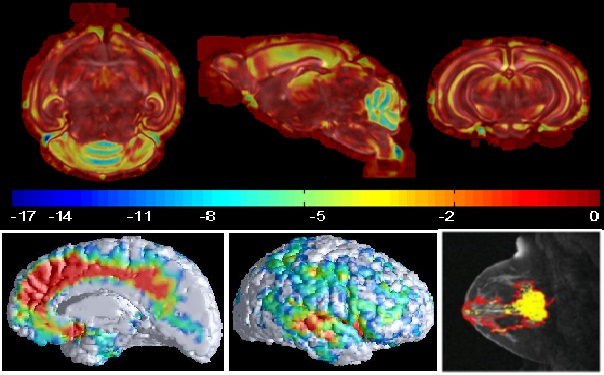

Advanced image analysis and computational tools are increasingly important across many areas of modern society. Over the last few decades these tools have revolutionized advanced healthcare, have been extremely important in large industries such as the petroleum sector, and form key parts of emerging technologies such as autonomus vehicles. All these results are rooted in fundamental knowledge of computer science and computational mathematics.
A Master's degree in Imaging and Biomedical Computing will give you a solid background and deep insight into the technology that underlies modern modern imaging and simulation tools. You will get an excellent foundation in mathematics and computing, with both being applicable across many branches of science and engineering.
The direction will have two separate but tightly connected branches. One is primarily focused on image analysis, image classification and signal processing, using a range of computational and mathematical tools.
The other branch of the study direction is focused on computational modeling of physical processes, with a particular focus on biomedical applications. Computational models are increasingly important in medical research, and are also making their way into clinical use. Advanced mathematics and computational tools are used to build computer simulations of organs and organ systems, which describe the physiology and function of the body in health and disease, and may be used for diagnosis and as virtual test beds for optimizing treatment. Although the main focus of this branch is on biomedical applications, the underlying tools of numerical analysis and computational mathematics are generally applicable, and the candidates are well prepared for tasks in many areas of science and engineering.
This is new program at the University of Oslo and through various activities, spanning from common meetings and field trips to various social gatherings, we will gradually build up a top learning environment where you will thrive as a student and learn to develop your scientific creativity. The University of Oslo offers a rich and active student environment with more than 200 student led activities and organizations.
All study options offer possibilities for stays abroad. Planning a semester or more abroad or performing parts of your thesis at a collaborating institution is something we highly recommend. As a student in this program you have a number of interesting international exchange possibilities. The involved researchers have extensive collaborations with other researchers worldwide. These exchange possibilities range from top universities in the USA, Asia and Europe as well as leading National Laboratories in the USA. Don't hesitate to get in touch with the contact person of your study option in case you plan to spend some time abroad. Studies at other institutions can be planned from the very first semester of this Master of Science program.
Students at the University of Oslo may choose to take parts of their degrees at a university abroad. The University of Oslo has exchange agreements with other universities in different parts of the world. The MN Faculty has additional exchange agreements with many universities abroad.
A significant aspect of this program is the ability to offer new educational opportunities that are aligned with the needs of a 21st century workforce. Many companies are seeking individuals who have knowledge of both a specific discipline and computational modeling. And candidates who are capable of modeling and understanding complicated systems in natural science, are in short supply in society. The computational methods and approaches to scientific problems that you will learn when working on your thesis project are very similar to the methods you will use in later stages of your career. To handle large numerical projects demands structured thinking and good analytical skills and a thorough understanding of the problems to be solved. This knowledge makes you unique on the labor market.
Career opportunities are many, from research institutes, universities and university colleges and a multitude of companies. The program gives an excellent background for further studies, with a PhD as one possible goal.
The program has also a strong international element which allows students to gain important experience from international collaborations in science, with the opportunity to spend parts of the time spent on thesis work at research institutions abroad.